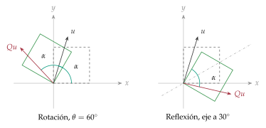

En los capítulos anteriores estudiamos las transformaciones lineales desde el punto de vista de lo que hacen: qué vectores anulan (el núcleo), qué vectores alcanzan (la imagen) y cómo se calculan mediante una matriz. Este capítulo pregunta por lo que una transformación lineal conserva. Hay dos respuestas, de naturaleza distinta y de la misma importancia.
La primera es la estructura de espacio vectorial: una transformación que no pierde información (uno a uno) y que no deja vectores sin alcanzar (sobre) es un isomorfismo, y dos espacios unidos por un isomorfismo son, como espacios vectoriales, el mismo espacio con los nombres de los vectores cambiados. Veremos que en dimensión finita esto ocurre exactamente cuando las dimensiones coinciden, y de ahí saldrá la justificación de una práctica que hemos seguido desde el comienzo: trabajar siempre en Rn.
La segunda es la geometría: una transformación de Rn que conserva la norma (una isometría) conserva también el producto punto, las distancias y los ángulos. Las matrices que las representan son las matrices ortogonales, y en el plano resultan ser exactamente las rotaciones y las reflexiones.
Una transformación lineal T:V→W es inyectiva o uno a uno (1–1) si para cada par de vectores u,v∈V, u=vimplicaT(u)=T(v).
Dicho con palabras: vectores distintos tienen imágenes distintas, de modo que T no «pega» dos vectores en uno. Tomando el contrarrecíproco, la definición equivale a la forma que se usa en la práctica: T es uno a uno si T(u)=T(v)implicau=v. Comprobar esta implicación directamente, para todos los pares de vectores, puede ser engorroso. Por fortuna, cuando T es lineal basta examinar un solo subespacio: el núcleo.
Sea T:V→W una transformación lineal. Entonces T es uno a uno si y solo si nuT={0}.
Demostraciónmostrar
(⇒) Supongamos que T es uno a uno y sea v∈nuT, es decir, T(v)=0. Como T es lineal, T(0)=0; así que T(v)=T(0). Por ser T uno a uno, v=0. Luego el único vector del núcleo es el cero. (Además 0∈nuT siempre, de modo que nuT={0}.)
(⇐) Supongamos que nuT={0} y sean u,v∈V con T(u)=T(v). Por la linealidad de T, T(u−v)=T(u)−T(v)=0, de donde u−v∈nuT={0}; es decir, u−v=0 y u=v. Hemos probado que T(u)=T(v) implica u=v, que es la forma equivalente de la definición.
Como la nulidad de T es la dimensión del núcleo, cuando V tiene dimensión finita el teorema se lee así: T es uno a uno si y solo si ν(T)=0.
Sea T:Mm×n→Mn×m la transformación lineal T(A)=AT. Demuestre que T es uno a uno.
Soluciónintenta primero
Por el teorema 10.2 basta calcular el núcleo. Si A∈nuT, entonces AT=0 (la matriz nula de Mn×m). Pero las entradas de AT son las de A reordenadas: (AT)ji=Aij. Si todas las entradas de AT son cero, todas las de A lo son, y A=0. Por tanto nuT={0} y T es uno a uno.
Ejemplo 10.4· La transformación cero no es uno a uno
Sea T:R2→R2 la transformación cero, T(v)=0 para todo v∈R2. Demuestre que T no es uno a uno.
Soluciónintenta primero
Todo vector está en el núcleo: nuT=R2={0}. Por el teorema 10.2, T no es uno a uno. Directamente: (1,0)=(0,0) pero T(1,0)=(0,0)=T(0,0). Para probar que una transformación no es uno a uno basta, en efecto, exhibir un solo vector no nulo del núcleo.
Una transformación lineal T:V→W es sobreyectiva o sobre si todo vector de W tiene una preimagen en V: para todo w∈W existe al menos un v∈V tal que T(v)=w.
La inyectividad dice que T no repite valores; la sobreyectividad, que T no deja valores sin tomar. Se traduce enseguida al lenguaje de la imagen y del rango.
Teorema 10.6· Caracterización de las transformaciones sobre
Sea T:V→W una transformación lineal.
(a)T es sobre si y solo si imT=W.
(b) Si W tiene dimensión finita, T es sobre si y solo si ρ(T)=dimW.
Demostraciónmostrar
(a) Por definición, imT={T(v):v∈V}⊆W. Decir que todo w∈W es de la forma T(v) es exactamente decir que W⊆imT. Así, T es sobre si y solo si imT=W.
(b) El rango es ρ(T)=dimimT. Si T es sobre, imT=W por (a) y entonces ρ(T)=dimW. Recíprocamente, supongamos ρ(T)=dimW. Como imT es un subespacio de W con la misma dimensión finita que W, una base de imT tiene dimW vectores linealmente independientes en W, y por tanto es una base de W (un conjunto linealmente independiente de dimW vectores en W es base). Entonces imT=W y T es sobre por (a).
10.3 Consecuencias del teorema fundamental
El teorema fundamental de las transformaciones lineales (o teorema de la dimensión) establece que, si V tiene dimensión finita, dimV=ρ(T)+ν(T). Junto con los teoremas 10.2 y 10.6 permite decidir la inyectividad y la sobreyectividad contando dimensiones, sin resolver sistemas de ecuaciones.
Teorema 10.7· Dimensiones, inyectividad y sobreyectividad
Sean V y W espacios vectoriales de dimensión finita y T:V→W una transformación lineal.
(a) Si dimV>dimW, entonces T no es uno a uno.
(b) Si dimV<dimW, entonces T no es sobre.
(c) Si dimV=dimW, entonces T es uno a uno si y solo si T es sobre.
Demostraciónmostrar
Como imT es un subespacio de W, se tiene ρ(T)≤dimW. Además, por el teorema fundamental, dimV=ρ(T)+ν(T).
(a) Si dimV>dimW, entonces ν(T)=dimV−ρ(T)≥dimV−dimW>0. Luego nuT={0} y, por el teorema 10.2, T no es uno a uno.
(b) Si dimV<dimW, entonces ρ(T)=dimV−ν(T)≤dimV<dimW. Por el teorema 10.6, T no es sobre.
(c) Sea n=dimV=dimW; el teorema fundamental dice n=ρ(T)+ν(T). Entonces T es uno a uno⟺ν(T)=0⟺ρ(T)=n=dimW⟺T es sobre, donde la primera equivalencia es el teorema 10.2, la segunda es la relación n=ρ(T)+ν(T) y la tercera es el teorema 10.6(b).
Las partes (a) y (b) son condiciones necesarias, no suficientes: que dimV≤dimW no garantiza que T sea uno a uno (la transformación cero R2→R3 no lo es), ni que dimV≥dimW garantice que sea sobre. La parte (c) sí es un criterio completo, pero solo cuando las dimensiones son iguales; en ese caso basta comprobar una de las dos propiedades para obtener la otra.
Para cada matriz A dada, halle la nulidad y el rango de T:Rn→Rm, T(x)=Ax, y decida si T es uno a uno y/o sobre. a) 100210011,b) 100210,c) (10210−1),d) 100210010.
Estrategia.
El rango de T es el rango de A (número de pivotes); la nulidad sale del teorema fundamental, ν(T)=n−ρ(T).
Soluciónintenta primero
Las cuatro matrices ya están en forma escalonada, de modo que el rango es el número de filas no nulas.
a)T:R3→R3. Hay tres pivotes (en las posiciones (1,1), (2,2) y (3,3)), así que ρ(T)=3 y ν(T)=3−3=0. Como ν(T)=0, T es uno a uno; como ρ(T)=3=dimR3, es sobre. Es un isomorfismo.
b)T:R2→R3. Hay dos pivotes: ρ(T)=2 y ν(T)=2−2=0. Es uno a uno. No es sobre, porque ρ(T)=2<3=dimR3 (esto también se sigue del teorema 10.7(b)).
c)T:R3→R2. Hay dos pivotes: ρ(T)=2 y ν(T)=3−2=1. Es sobre, pues ρ(T)=2=dimR2; no es uno a uno, pues ν(T)=1>0 (de nuevo, era inevitable por el teorema 10.7(a)).
d)T:R3→R3. Hay dos pivotes (la tercera fila es nula): ρ(T)=2 y ν(T)=3−2=1. No es uno a uno (ν(T)=0) y no es sobre (ρ(T)=2=3). Aquí se ve la parte (c) del teorema 10.7: al ser dimV=dimW, las dos propiedades fallan a la vez.
Determine si T:R3→R2 dada por Txyz=(142536)xyz es uno a uno.
Soluciónintenta primero
Como dimR3=3>2=dimR2, el teorema 10.7(a) asegura que T no es uno a uno. Para verlo de manera explícita buscamos un vector no nulo del núcleo: (142536)F2→F2−4F1(102−33−6)F2→−31F2(102132)F1→F1−2F2(1001−12). Con z libre, x=z y y=−2z; luego nuT=gen{(1,−2,1)}. En efecto, T(1,−2,1)=(1−4+3,4−10+6)=(0,0). Así ν(T)=1 y ρ(T)=3−1=2; T es sobre, pero no uno a uno.
Determine si T:R2→R3 dada por T(xy)=135246(xy) es sobre.
Soluciónintenta primero
Como dimR2=2<3=dimR3, el teorema 10.7(b) asegura que T no es sobre: ρ(T)≤2<3. Es instructivo exhibir un vector que no se alcanza. La imagen es el plano generado por las columnas (1,3,5) y (2,4,6). Un vector normal a ese plano es el producto vectorial (1,3,5)×(2,4,6)=(3⋅6−5⋅4,5⋅2−1⋅6,1⋅4−3⋅2)=(−2,4,−2), proporcional a (1,−2,1). Por tanto imT={(a,b,c):a−2b+c=0} (se verifica con las dos columnas: 1−6+5=0 y 2−8+6=0). El vector (1,0,0) no cumple la ecuación, así que no tiene preimagen. Por otro lado, las dos columnas son linealmente independientes (no son proporcionales), de modo que ρ(T)=2, ν(T)=0 y T sí es uno a uno.
Los espacios vectoriales V y W son isomorfos si existe un isomorfismo T:V→W. Se escribe V≅W.
Un isomorfismo es una correspondencia biunívoca entre los vectores de V y los de W que además respeta la suma y el producto por escalares. Por eso los espacios isomorfos son «esencialmente iguales»: lo que se pueda decir de V usando solo sumas y múltiplos escalares se traduce palabra por palabra a W. El teorema 10.19 precisará en qué sentido.
Demuestre que T:R3→P2, T(a,b,c)=a+bx+cx2, es un isomorfismo.
Soluciónintenta primero
Linealidad. Sean u=(a,b,c), v=(a′,b′,c′) y λ∈R. Entonces T(u+v)T(λu)=(a+a′)+(b+b′)x+(c+c′)x2=(a+bx+cx2)+(a′+b′x+c′x2)=T(u)+T(v),=λa+λbx+λcx2=λ(a+bx+cx2)=λT(u).
Uno a uno. Si (a,b,c)∈nuT, el polinomio a+bx+cx2 es el polinomio cero. Dos polinomios son iguales cuando coinciden sus coeficientes, así que a=b=c=0. Por el teorema 10.2, T es uno a uno.
Sobre. Todo polinomio de P2 es de la forma a+bx+cx2, que es T(a,b,c). (Alternativamente: dimR3=3=dimP2 y el teorema 10.7(c) da la sobreyectividad a partir de la inyectividad.)
Como T es lineal, uno a uno y sobre, es un isomorfismo.
Cuando V=W=Rn el isomorfismo se detecta en la matriz de la transformación. El siguiente teorema recoge además el hecho de que la inversa de un isomorfismo sigue siendo lineal, que necesitamos a continuación.
Teorema 10.14· Inversa y composición de isomorfismos
(a) Si T:V→W es un isomorfismo, entonces la transformación inversa T−1:W→V (que a cada w le asigna la única preimagen de w) es lineal y es un isomorfismo.
(b) Si T:V→W y S:W→U son isomorfismos, entonces S∘T:V→U es un isomorfismo.
En consecuencia, la relación V≅W es reflexiva (la identidad), simétrica (por (a)) y transitiva (por (b)).
Demostraciónmostrar
(a) Como T es sobre, todo w∈W tiene una preimagen; como es uno a uno, esa preimagen es única. Así T−1 está bien definida, y T(T−1(w))=w, T−1(T(v))=v. Veamos que es lineal. Sean w1,w2∈W y λ∈R. Por la linealidad de T, T(T−1(w1)+λT−1(w2))=T(T−1(w1))+λT(T−1(w2))=w1+λw2. Así T−1(w1)+λT−1(w2) es una preimagen de w1+λw2; por la unicidad de la preimagen, es T−1(w1+λw2). Esto prueba T−1(w1+λw2)=T−1(w1)+λT−1(w2). Finalmente, T−1 es uno a uno (si T−1(w1)=T−1(w2), aplicando T se obtiene w1=w2) y sobre (todo v∈V es T−1(T(v))). Es un isomorfismo.
(b) La composición de transformaciones lineales es lineal. Si (S∘T)(v)=(S∘T)(v′), entonces S(T(v))=S(T(v′)); como S es uno a uno, T(v)=T(v′), y como T es uno a uno, v=v′. Si u∈U, como S es sobre existe w∈W con S(w)=u, y como T es sobre existe v∈V con T(v)=w; entonces (S∘T)(v)=u.
Sea T:Rn→Rn una transformación lineal con matriz estándar AT. Las siguientes afirmaciones son equivalentes.
(a)T es invertible (existe S:Rn→Rn tal que S∘T=T∘S=id).
(b)T es un isomorfismo.
(c)AT es invertible, y en tal caso AT−1=(AT)−1.
Demostraciónmostrar
(a)⇒(b). Si S∘T=id, entonces T(u)=T(v) implica u=S(T(u))=S(T(v))=v: T es uno a uno. Si w∈Rn, entonces w=T(S(w)): T es sobre.
(b)⇒(c). Por el teorema 10.14, T−1 es lineal, y por tanto tiene una matriz estándar AT−1. La matriz de una composición es el producto de las matrices, así que AT−1AT=AT−1∘T=Aid=In y, análogamente, ATAT−1=In. Luego AT es invertible con inversa AT−1.
(c)⇒(a). Si AT es invertible, la transformación S(x)=AT−1x es lineal y cumple S(T(x))=AT−1ATx=x y T(S(x))=x.
Esto conecta el vocabulario de las transformaciones con el de las matrices y permite añadir un ítem más a la lista de equivalencias de las matrices invertibles.
Teorema 10.16· Caracterizaciones de las matrices invertibles
Sea A una matriz n×n. Las siguientes afirmaciones son equivalentes.
(a)A es invertible (no singular).
(b) La única solución del sistema homogéneo Ax=0 es x=0.
(c) El sistema Ax=b tiene solución única para cada vector columna b.
(d)A es equivalente por filas a In.
(e)A es producto de matrices elementales.
(f) Las columnas (y las filas) de A son linealmente independientes.
(g)detA=0.
(h)ν(A)=0.
(i)ρ(A)=n.
(j) La transformación lineal T(x)=Ax es un isomorfismo.
Demostraciónmostrar
Las equivalencias (a)–(g) son las de la caracterización de las matrices invertibles ya demostrada. Añadimos las nuevas. Sea T(x)=Ax; su núcleo es NA y su imagen es el espacio columna CA, de modo que ν(A)=dimNA=ν(T) y ρ(A)=dimCA=ρ(T).
(b)⟺(h): ν(A)=dimNA=0 si y solo si NA={0}, es decir, si y solo si Ax=0 solo tiene la solución trivial.
(h)⟺(i): por el teorema fundamental, n=ρ(A)+ν(A).
(h)⟺(j): como dimRn=dimRn, por el teorema 10.7(c) T es un isomorfismo si y solo si es uno a uno, esto es, por el teorema 10.2, si y solo si nuT=NA={0}, es decir, ν(A)=0.
Sea T:R3→R3 con matriz estándar AT=232334111,es decir,T(x,y,z)=(2x+3y+z,3x+3y+z,2x+4y+z). Demuestre que T es un isomorfismo y halle una fórmula para T−1.
Soluciónintenta primero
Por el teorema 10.15, T es un isomorfismo si y solo si AT es invertible, y entonces AT−1=AT−1. Reducimos la matriz aumentada (AT∣I): 232334111100010001F2→F2−F1,F3→F3−F12103011001−1−1010001F1→F1−3F32100011004−1−1010−301F1→F1−2F20100011006−1−1−210−301. Ordenando las filas (la segunda pasa a primera, la tercera a segunda y la primera a tercera), en el lado izquierdo aparece I3 y, por tanto, AT es invertible con AT−1=−1−1610−201−3. Así T es un isomorfismo, y T−1(x,y,z)=AT−1xyz=(y−x,z−x,6x−2y−3z). Comprobación: T−1(T(1,0,0))=T−1(2,3,2)=(3−2,2−2,12−6−6)=(1,0,0).
(a) Si v1,…,vn generan a V, entonces T(v1),…,T(vn) generan a W.
(b) Si v1,…,vn son linealmente independientes en V, entonces T(v1),…,T(vn) son linealmente independientes en W.
(c) Si {v1,…,vn} es una base de V, entonces {T(v1),…,T(vn)} es una base de W.
(d) Si V tiene dimensión finita, entonces W también y dimV=dimW.
Demostraciónmostrar
(a) Sea w∈W. Como T es sobre, w=T(v) para algún v∈V, y como los vi generan, v=c1v1+⋯+cnvn. Por la linealidad, w=T(v)=c1T(v1)+⋯+cnT(vn). Luego w∈gen{T(v1),…,T(vn)}.
(b) Supongamos c1T(v1)+⋯+cnT(vn)=0. Entonces T(c1v1+⋯+cnvn)=0, de modo que c1v1+⋯+cnvn∈nuT={0} (teorema 10.2). Como los vi son independientes, c1=⋯=cn=0.
(c) Es la unión de (a) y (b): los vectores T(vi) generan a W y son independientes.
(d) Sea {v1,…,vn} una base de V con n=dimV. Por (c), {T(v1),…,T(vn)} es una base de W con n vectores (son n vectores distintos, pues al ser independientes no pueden repetirse). Luego dimW=n=dimV.
El resultado central de esta sección es que, en dimensión finita, la dimensión es el único invariante de un espacio vectorial salvo isomorfismo.
Sean V y W espacios vectoriales de dimensión finita. Entonces V≅W si y solo si dimV=dimW.
Demostraciónmostrar
(⇒) Si existe un isomorfismo T:V→W, el teorema 10.18(d) da dimV=dimW.
(⇐) Sea n=dimV=dimW. Si n=0 ambos espacios son {0} y la transformación cero es un isomorfismo. Si n≥1, sean {v1,…,vn} una base de V y {w1,…,wn} una base de W. Todo v∈V se escribe de manera única como v=c1v1+⋯+cnvn; definimos T(v)=c1w1+⋯+cnwn. La unicidad de los coeficientes hace que T esté bien definida.
T es lineal. Si v=∑civi, v′=∑ci′vi y λ∈R, entonces v+λv′=∑(ci+λci′)vi, así que T(v+λv′)=∑(ci+λci′)wi=T(v)+λT(v′).
T es uno a uno. Si T(v)=0, entonces c1w1+⋯+cnwn=0, y por la independencia de los wi, todos los ci son cero, es decir, v=0. Luego nuT={0}.
T es sobre. Un vector w=d1w1+⋯+dnwn de W es T(d1v1+⋯+dnvn).
Por tanto T es un isomorfismo y V≅W.
Observación · La transformación se define por las bases
La demostración muestra cómo construir un isomorfismo entre dos espacios de la misma dimensión: se escoge una base en cada uno y se envía cada vector de la primera base al correspondiente de la segunda. No hay un único isomorfismo: cada elección de bases produce uno.
Los tres espacios tienen dimensión 4: {1,x,x2,x3} es una base de P3, la base canónica {e1,e2,e3,e4} de R4 y {(1000),(0010),(0100),(0001)} es una base de M2×2. Por el teorema 10.19 son isomorfos. Exhiba los isomorfismos.
Soluciónintenta primero
Siguiendo la construcción de la demostración anterior, enviamos cada base a la siguiente: T:P3→R4,T(a+bx+cx2+dx3)=(a,b,c,d);S:R4→M2×2,S(a,b,c,d)=(acbd). Ambas son lineales (las operaciones se hacen coeficiente a coeficiente), tienen núcleo {0} (todos los coeficientes o entradas son cero) y son sobre (todo vector (a,b,c,d) o toda matriz se obtiene). Sus inversas son T−1(a,b,c,d)=a+bx+cx2+dx3 y S−1(acbd)=(a,b,c,d). Por el teorema 10.14, la composición S∘T:P3→M2×2,(S∘T)(a+bx+cx2+dx3)=(acbd) es un isomorfismo, y así P3≅R4≅M2×2. Con otra elección de bases se obtienen otros isomorfismos; por ejemplo (a,b,c,d)↦(abcd) también lo es.
10.6 El isomorfismo de coordenadas y por qué basta trabajar en Rn
Sea V un espacio de dimensión n y B={v1,…,vn} una base. Todo v∈V se escribe de manera única como v=c1v1+⋯+cnvn, y su vector de coordenadas es [v]B=(c1,…,cn)∈Rn. La asignación v↦[v]B ya nos ha acompañado desde el capítulo de coordenadas; ahora podemos decir qué es.
Sea B una base de un espacio vectorial V de dimensión n. La transformación CB:V→Rn,CB(v)=[v]B, es un isomorfismo. En particular, todo espacio vectorial de dimensión n es isomorfo a Rn.
Demostraciónmostrar
Es el isomorfismo construido en el teorema 10.19 cuando en W=Rn se toma la base canónica {e1,…,en}: CB(vi)=ei. Comprobémoslo de todos modos. Si v=∑civi y v′=∑ci′vi, entonces v+λv′=∑(ci+λci′)vi, luego [v+λv′]B=[v]B+λ[v′]B: CB es lineal. Si [v]B=0, todos los coeficientes son cero y v=0: es uno a uno. Y todo (c1,…,cn)∈Rn es el vector de coordenadas de c1v1+⋯+cnvn: es sobre.
La consecuencia práctica es enorme. Un isomorfismo transporta bases en bases, conjuntos independientes en independientes y conjuntos generadores en generadores (teorema 10.18), y su inversa, que también es un isomorfismo (teorema 10.14), hace el camino de regreso. En consecuencia, para vectores u1,…,uk de V y B una base de V:
u1,…,uk son linealmente independientes en V si y solo si [u1]B,…,[uk]B lo son en Rn;
u1,…,uk generan a V si y solo si [u1]B,…,[uk]B generan a Rn; y {u1,…,uk} es una base de V si y solo si {[u1]B,…,[uk]B} lo es de Rn;
dimgen{u1,…,uk}=ρ(M), donde M es la matriz cuyas columnas son [u1]B,…,[uk]B.
Lo mismo ocurre con las transformaciones: si T:V→W es lineal y AT es su matriz respecto de las bases B de V y C de W, entonces [T(v)]C=AT[v]B, de modo que las coordenadas convierten a T en la multiplicación por AT; el núcleo de T corresponde por CB al espacio nulo NAT, y la imagen de T corresponde por CC al espacio columna de AT. Así ν(T)=ν(AT) y ρ(T)=ρ(AT), y T es un isomorfismo si y solo si AT es invertible. Este es el sentido preciso de la frase «podemos trabajar siempre en Rn»: todas las cuestiones de álgebra lineal (independencia, generación, dimensión, núcleo, imagen, invertibilidad) que se formulan en un espacio abstracto de dimensión n se resuelven, con las mismas respuestas, en Rn con matrices. Lo que no se conserva por un isomorfismo cualquiera es la geometría (normas y ángulos), de lo que trata la segunda parte del capítulo.
Ejemplo 10.22· Dependencia lineal de polinomios por coordenadas
En P3 considere p1=1+x, p2=x+x2, p3=x2+x3, p4=1+x3. Determine si son linealmente independientes y halle la dimensión de gen{p1,p2,p3,p4}.
Soluciónintenta primero
Con la base B={1,x,x2,x3} los vectores de coordenadas son [p1]B=1100,[p2]B=0110,[p3]B=0011,[p4]B=1001. Reducimos la matriz M cuyas columnas son estos vectores: 1100011000111001F2→F2−F11000011000111−101F3→F3−F21000010000111−111F4→F4−F31000010000101−110. Hay tres pivotes: ρ(M)=3<4. Por el teorema 10.21 y lo dicho arriba, los cuatro polinomios son linealmente dependientes y dimgen{p1,p2,p3,p4}=3. La relación de dependencia sale del espacio nulo de M: con t libre, c3=−t, c2=t, c1=−t, c4=t; con t=1, −p1+p2−p3+p4=−(1+x)+(x+x2)−(x2+x3)+(1+x3)=0.
Ejemplo 10.23· Valores de K que impiden un isomorfismo M2×2→P3
Sea T:M2×2→P3 la transformación lineal T(acbd)=(64−K2)ax3+(K−47)dx2+cx+(476−K2)b. Halle los valores de K para los cuales Tno es un isomorfismo.
Estrategia.
Como dimM2×2=dimP3=4, T es un isomorfismo si y solo si su matriz respecto de bases es invertible.
Soluciónintenta primero
Tomamos la base B={E1,E2,E3,E4} de M2×2 formada por las matrices con un 1 en la posición (1,1),(1,2),(2,1),(2,2) y ceros en las demás, y la base B={1,x,x2,x3} de P3. Calculamos las imágenes: T(E1)T(E2)T(E3)T(E4)=(64−K2)x3,=476−K2,=x,=(K−47)x2,[T(E1)]B[T(E2)]B[T(E3)]B[T(E4)]B=(0,0,0,64−K2),=(476−K2,0,0,0),=(0,1,0,0),=(0,0,K−47,0). Escribiendo estos vectores como columnas, AT=00064−K2476−K2000010000K−470. Cada fila y cada columna contiene una sola entrada no nula posible, de modo que detAT=±(64−K2)(476−K2)(K−47). Por el teorema 10.15 (o el 10.16), T es un isomorfismo si y solo si estos tres factores son no nulos. No es un isomorfismo cuando
64−K2=0, es decir, K2=1296: K=±36;
476−K2=0, es decir, K2=(473)2: K=±473=±103823;
K−47=0: K=47.
Por tanto los valores que impiden el isomorfismo son K∈{−36,36,47,103823,−103823}. Los demás números que suelen proponerse (por ejemplo 6, −6, 2209=472, −2209 o 94) sí dan un isomorfismo.
10.7 Matrices ortogonales
Pasamos ahora a la geometría. Para poder hablar de longitudes y ángulos trabajamos en Rn con el producto punto usual, u⋅v=uTv=u1v1+⋯+unvn, y la norma ∥v∥=v⋅v. Recordemos que una base es ortonormal si sus vectores son unitarios y ortogonales dos a dos.
Una matriz cuadrada Q es ortogonal si es invertible y Q−1=QT.
Calcular una inversa es costoso; para una matriz ortogonal se reduce a transponer. El siguiente teorema da tres maneras equivalentes de reconocerlas, la más útil de las cuales es la tercera: basta mirar las columnas.
Teorema 10.25· Caracterización de las matrices ortogonales
Sea Q una matriz cuadrada n×n. Son equivalentes:
(a)QTQ=In.
(b)Q es invertible y Q−1=QT (es decir, Q es ortogonal).
(c) Las columnas de Q forman una base ortonormal de Rn.
Demostraciónmostrar
(a)⇒(b). De QTQ=In se obtiene, tomando determinantes, det(QT)detQ=(detQ)2=1, así que detQ=0 y Q es invertible. Multiplicando QTQ=In por Q−1 a la derecha resulta QT=Q−1.
(b)⇒(a). Si Q−1=QT, entonces QTQ=Q−1Q=In.
(a)⟺(c). Sean q1,…,qn las columnas de Q. La entrada (i,j) del producto QTQ es la fila i de QT (que es qiT) por la columna j de Q: (QTQ)ij=qiTqj=qi⋅qj. Por tanto QTQ=In si y solo si qi⋅qj=1 para i=j y qi⋅qj=0 para i=j, esto es, si y solo si q1,…,qn son unitarios y ortogonales dos a dos. Un conjunto ortonormal es linealmente independiente y tiene n vectores en Rn, luego es una base. Recíprocamente, una base ortonormal cumple esas relaciones.
Como Q−1=QT también cumple QQT=In, las filas de una matriz ortogonal forman igualmente una base ortonormal (son las columnas de QT, que también es ortogonal). De (detQ)2=1 se sigue detQ=±1. Además, si Q y P son ortogonales, también lo son Q−1=QT y QP, pues (QP)T(QP)=PTQTQP=PTP=In.
Determine cuáles de las siguientes matrices son ortogonales: A=(0−110),B=(32−2−1),C=(cosθsenθ−senθcosθ),D=010100001.
Estrategia.
Calcular QTQ y comparar con la identidad, o comprobar que las columnas son unitarias y ortogonales.
Soluciónintenta primero
A:ATA=(01−10)(0−110)=(0⋅0+(−1)(−1)1⋅0+0⋅(−1)0⋅1+(−1)⋅01⋅1+0⋅0)=(1001). Es ortogonal. (Es la rotación de ángulo −π/2.)
B: la primera columna es (3,2) y tiene norma 13=1. Explícitamente, BTB=(3−22−1)(32−2−1)=(13−8−85)=I2. No es ortogonal.
C: las columnas (cosθ,senθ) y (−senθ,cosθ) tienen norma cos2θ+sen2θ=1, y su producto punto es −cosθsenθ+senθcosθ=0. Es ortogonal para todo θ, con C−1=CT (la rotación de ángulo −θ).
D: sus columnas son e2,e1,e3, que forman una base ortonormal de R3. Es ortogonal (es la matriz que intercambia las dos primeras coordenadas); DT=D=D−1 y detD=−1.
Determine si el conjunto S={v1,v2,v3}=⎩⎨⎧2/32/31/3,−2/31/32/3,1/3−2/32/3⎭⎬⎫ es ortonormal.
Soluciónintenta primero
Normas: ∥v1∥2=94+94+91=1,∥v2∥2=94+91+94=1,∥v3∥2=91+94+94=1. Productos punto: v1⋅v2v1⋅v3v2⋅v3=−94+92+92=0,=92−94+92=0,=−92−92+94=0. Los tres vectores son unitarios y ortogonales dos a dos: S es ortonormal y, por el teorema 10.25, la matriz Q con esas columnas es ortogonal, de modo que Q−1=QT.
10.8 Isometrías
Para relacionar las matrices ortogonales con la geometría necesitamos cómo se comporta el producto punto frente a una matriz.
Sea A una matriz m×n con entradas reales. Para todo x∈Rn y todo y∈Rm, (Ax)⋅y=x⋅(ATy).
Demostraciónmostrar
Escribimos el producto punto como producto de matrices, u⋅v=uTv, y usamos que (AB)T=BTAT: (Ax)⋅y=(Ax)Ty=xTATy=xT(ATy)=x⋅(ATy).
Teorema 10.29· Matrices ortogonales y producto punto
Sea Q una matriz n×n. Son equivalentes:
(a)Q es ortogonal.
(b)∥Qx∥=∥x∥ para todo x∈Rn.
(c)Qx⋅Qy=x⋅y para todo x,y∈Rn.
Demostraciónmostrar
(a)⇒(c). Por el teorema 10.28 con A=Q y el vector Qy en lugar de y, Qx⋅Qy=x⋅(QTQy)=x⋅(Iy)=x⋅y.
(c)⇒(b). Tomando y=x en (c): ∥Qx∥2=Qx⋅Qx=x⋅x=∥x∥2, y las normas son no negativas.
(b)⇒(a). Hay que probar QTQ=In. Para todo x,y, la identidad de polarización u⋅v=21(∥u+v∥2−∥u∥2−∥v∥2) (que se verifica desarrollando ∥u+v∥2=∥u∥2+2u⋅v+∥v∥2) da Qx⋅Qy=21(∥Qx+Qy∥2−∥Qx∥2−∥Qy∥2)=21(∥Q(x+y)∥2−∥Qx∥2−∥Qy∥2)=21(∥x+y∥2−∥x∥2−∥y∥2)=x⋅y. Ahora, para x=ei y y=ej, el producto Qei⋅Qej es qi⋅qj (las columnas de Q), y es igual a ei⋅ej, que vale 1 si i=j y 0 si i=j. Así las columnas de Q son ortonormales, y por el teorema 10.25, Q es ortogonal.
Estas equivalencias motivan la siguiente definición, que ya no menciona matrices.
Una transformación lineal T:Rn→Rn es una isometría si conserva la norma: para todo x∈Rn, ∥T(x)∥=∥x∥.
En principio esta condición solo habla de longitudes; el teorema siguiente muestra que en realidad se conserva toda la geometría euclidiana.
Teorema 10.31· Las isometrías conservan producto punto, distancias y ángulos
Sea T:Rn→Rn una isometría. Para todos x,y∈Rn:
(a)T(x)⋅T(y)=x⋅y.
(b)∥T(x)−T(y)∥=∥x−y∥ (se conservan las distancias).
(c) Si x,y=0, el ángulo entre T(x) y T(y) es igual al ángulo entre x y y. En particular, T envía vectores ortogonales en vectores ortogonales.
Demostraciónmostrar
(a) Por linealidad, T(x)+T(y)=T(x+y). Aplicando la identidad de polarización y la definición de isometría a x+y, x e y: T(x)⋅T(y)=21(∥T(x)+T(y)∥2−∥T(x)∥2−∥T(y)∥2)=21(∥T(x+y)∥2−∥T(x)∥2−∥T(y)∥2)=21(∥x+y∥2−∥x∥2−∥y∥2)=x⋅y.
(b) Por linealidad, T(x)−T(y)=T(x−y), y ∥T(x−y)∥=∥x−y∥ por ser T isometría.
(c) Si x=0, entonces ∥T(x)∥=∥x∥=0, así que T(x)=0 (lo mismo con y). El coseno del ángulo φ entre x y y es cosφ=∥x∥∥y∥x⋅y; el del ángulo φ′ entre T(x) y T(y) es, por (a) y por la conservación de las normas, cosφ′=∥T(x)∥∥T(y)∥T(x)⋅T(y)=∥x∥∥y∥x⋅y=cosφ. Como φ,φ′∈[0,π] y el coseno es inyectivo en ese intervalo, φ′=φ. Si x⋅y=0, también T(x)⋅T(y)=0.
La caracterización matricial ya está a un paso: el teorema 10.29 dice que las matrices ortogonales son las que conservan la norma, es decir, las que definen isometrías.
Una transformación lineal T:Rn→Rn es una isometría si y solo si su matriz estándar AT es ortogonal. Además, toda isometría es un isomorfismo.
Demostraciónmostrar
Como T(x)=ATx, la condición ∥T(x)∥=∥x∥ para todo x es la condición (b) del teorema 10.29 para Q=AT, que equivale a que AT sea ortogonal. Si T es una isometría, AT es ortogonal, en particular invertible, y por el teorema 10.15T es un isomorfismo.
Determine si T:R2→R2 es una isometría: T(xy)=(22−222222)(xy).
Soluciónintenta primero
Por el teorema 10.32 basta ver si la matriz A=AT es ortogonal. Sus columnas son (22,22) y (−22,22). Sus normas son 42+42=1 y su producto punto es −42+42=0. Por el teorema 10.25, A es ortogonal y T es una isometría. Comprobación directa con la norma: ∥T(x,y)∥2=(22(x−y))2+(22(x+y))2=21[(x−y)2+(x+y)2]=x2+y2. Como cos4π=sen4π=22, T es la rotación de ángulo θ=45∘.
Ahora bien, ¿cómo se construyen isometrías? Basta llevar una base ortonormal en otra.
Sean {u1,…,un} y {w1,…,wn} bases ortonormales de Rn y sea T:Rn→Rn la transformación lineal definida por T(ui)=wi para i=1,…,n. Entonces T es una isometría.
Demostraciónmostrar
Sea x∈Rn. Como {ui} es una base ortonormal, x=c1u1+⋯+cnun con ci=x⋅ui, y ∥x∥2=x⋅x=i,j∑cicj(ui⋅uj)=c12+⋯+cn2. Por linealidad, T(x)=c1w1+⋯+cnwn, y como {wi} es ortonormal, el mismo cálculo da ∥T(x)∥2=c12+⋯+cn2=∥x∥2.
Teorema 10.35· Las isometrías llevan bases ortonormales en bases ortonormales
Sea T:Rn→Rn una isometría. Si {u1,…,un} es una base ortonormal de Rn, entonces {T(u1),…,T(un)} es una base ortonormal de Rn.
Demostraciónmostrar
Por el teorema 10.31(a), T(ui)⋅T(uj)=ui⋅uj, que vale 1 si i=j y 0 si i=j. Así {T(u1),…,T(un)} es un conjunto ortonormal de n vectores; por ser ortonormal es linealmente independiente y, teniendo n=dimRn vectores, es una base.
Los teoremas 10.34 y 10.35 son recíprocos uno del otro: las isometrías son exactamente las transformaciones que transportan una (y entonces toda) base ortonormal en otra.
10.9 Isometrías de R2: rotaciones y reflexiones
En el plano las matrices ortogonales pueden describirse por completo. Para θ∈R escribimos Rθ=(cosθsenθ−senθcosθ)(rotacioˊn de aˊngulo θ alrededor del origen).
Teorema 10.36· Clasificación de las isometrías de R2
Sea Q una matriz 2×2. Entonces Q es ortogonal si y solo si es de una de las dos formas detQ=1:Q=Rθ=(cosθsenθ−senθcosθ),detQ=−1:Q=Rθ(100−1)=(cosθsenθsenθ−cosθ), para algún θ∈[0,2π). En consecuencia, toda isometría T:R2→R2 es
(a) una rotación de ángulo θ alrededor del origen, si detAT=1; o
(b) una reflexión respecto del eje x seguida de una rotación de ángulo θ, si detAT=−1. Esta composición es la reflexión respecto de la recta por el origen que forma el ángulo θ/2 con el eje x.
Demostraciónmostrar
Sea Q ortogonal con columnas q1,q2. Por el teorema 10.25 son unitarias y ortogonales. Como q1=(a,b) es unitario, a2+b2=1, y existe θ con a=cosθ, b=senθ. Los vectores unitarios ortogonales a q1 son exactamente dos: (−senθ,cosθ) y su opuesto (senθ,−cosθ) (un vector (c,d) ortogonal a q1 cumple ccosθ+dsenθ=0, luego es múltiplo de (−senθ,cosθ), y para tener norma 1 el múltiplo es ±1). Así hay solo dos posibilidades: Q=(cosθsenθ−senθcosθ)oQ=(cosθsenθsenθ−cosθ). Sus determinantes son cos2θ+sen2θ=1 y −cos2θ−sen2θ=−1, respectivamente; en particular la forma con detQ=1 es única y la de detQ=−1 también. Recíprocamente, ambas matrices tienen columnas unitarias y ortogonales, luego son ortogonales. El producto Rθdiag(1,−1) tiene por columnas la primera columna de Rθ y la opuesta de la segunda, que es la segunda forma.
Interpretación de (a).Rθe1=(cosθ,senθ) y Rθe2=(−senθ,cosθ): la base canónica gira el ángulo θ; por linealidad, todo el plano gira θ.
Interpretación de (b). Sea h=θ/2 y Q=(cosθsenθsenθ−cosθ). Con las fórmulas del ángulo doble y de la resta, Q(coshsenh)Q(−senhcosh)=(cosθcosh+senθsenhsenθcosh−cosθsenh)=(cos(θ−h)sen(θ−h))=(coshsenh),=(−cosθsenh+senθcosh−senθsenh−cosθcosh)=(sen(θ−h)−cos(θ−h))=−(−senhcosh). Así Q deja fijo cada vector de la recta L con dirección (cosh,senh) y cambia de signo cada vector perpendicular a L: es la reflexión respecto de L. Para θ=0 se obtiene diag(1,−1), la reflexión respecto del eje x.
Determine si las matrices siguientes son ortogonales y, en caso afirmativo, diga si son una rotación o una reflexión y con qué ángulo o eje: Q1=(53−545453),Q2=(535454−53).
Soluciónintenta primero
Para Q1: las columnas (53,54) y (−54,53) tienen norma 259+2516=1 y producto punto −2512+2512=0. Es ortogonal, con detQ1=259+2516=1. Es una rotación con cosθ=53, senθ=54, es decir, θ=arctan34≈53,13∘.
Para Q2: las columnas (53,54) y (54,−53) son unitarias y ortogonales (2512−2512=0). Es ortogonal, con detQ2=−259−2516=−1: es una reflexión. Con cosθ=53 y senθ=54, el eje forma el ángulo h=θ/2 con tanh=1+cosθsenθ=8/54/5=21. El eje es la recta y=21x, de dirección (2,1). Comprobación: Q2(2,1)=(56+54,58−53)=(2,1), y para el vector perpendicular (−1,2): Q2(−1,2)=(−53+58,−54−56)=(1,−2)=−(−1,2).
La figura siguiente muestra ambas isometrías sobre un mismo vector u y el cuadrado unidad. Las longitudes de los lados y del vector, así como los ángulos rectos del cuadrado y el ángulo α entre u y el primer eje, se conservan; lo que distingue a la reflexión de la rotación es que invierte la orientación (el orden en que se recorren Qe1 y Qe2 es el contrario).

Rotación de 60∘ (izquierda) y reflexión respecto de la recta a 30∘ (derecha). El cuadrado unidad (discontinuo) y el vector u=(0,4;1,3) pasan a la figura de trazo verde y a Qu (rojo): mismas longitudes (∥Qu∥=∥u∥, lados de longitud 1) y mismos ángulos.
Ejercicios propuestos
Sea T:P2→P2, T(p)=p′ (derivada). Halle nuT e imT y decida si T es uno a uno o sobre. ¿Es T:P2→P1 sobre?
Demuestre que T:M2×2→M2×2, T(A)=PA, con P invertible, es un isomorfismo, y halle T−1.
Demuestre que un isomorfismo T:V→W transforma un subespacio H⊆V en un subespacio T(H)⊆W con dimT(H)=dimH.
Demuestre que si Q es ortogonal, los valores propios reales de Q (si existen) son 1 o −1.
Halle la matriz de la reflexión respecto de la recta y=3x y compruebe que es ortogonal con determinante −1.
InteractivoIsometrías y no isometrías
Las rotaciones y reflexiones dejan el círculo verde intacto; las demás lo deforman.